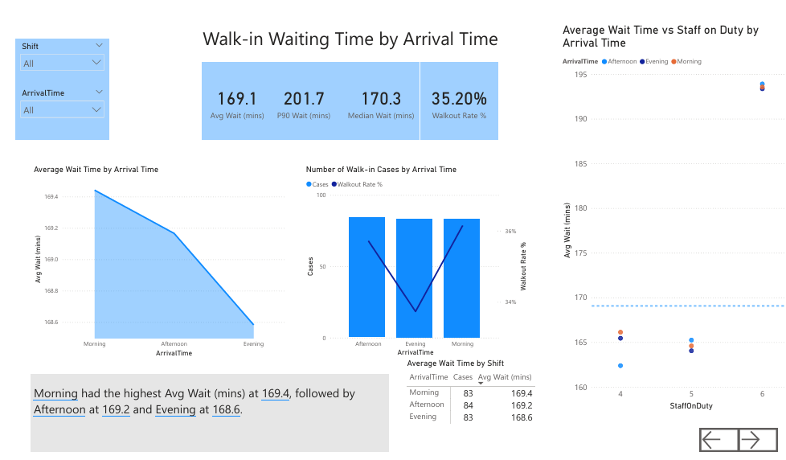
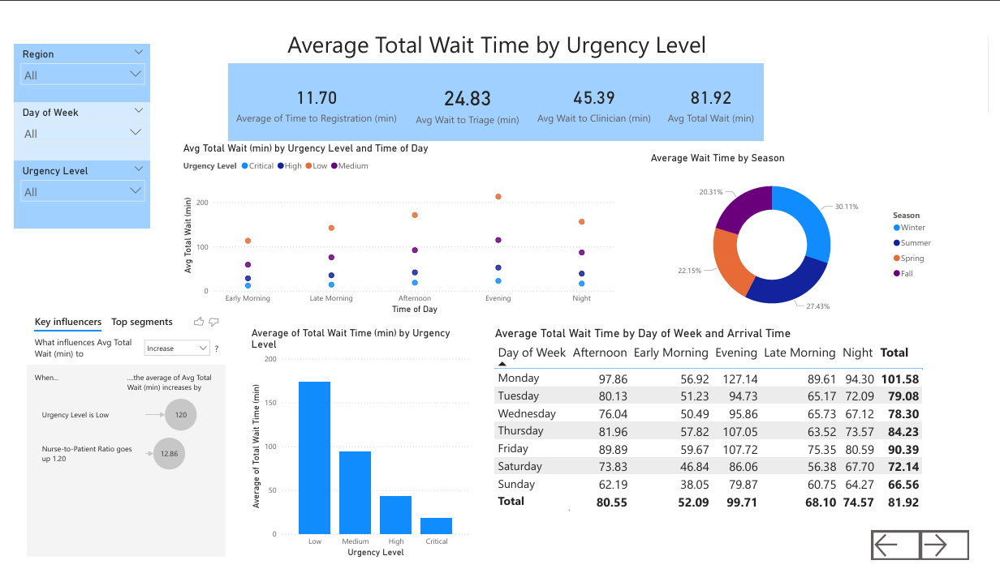
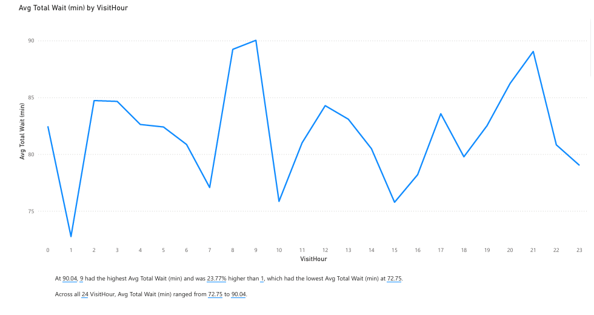

Data analytics & reporting · Individual assignment
Emergency Department Waiting Time
An individual Power BI project exploring walk-in waiting times through data preparation, DAX measures, and three analytical report views.

Original Power BI screenshot extracted from the submitted assignment report.
The analytical question
How long do walk-in patients wait before receiving an initial clinical assessment and treatment, and how do those waits vary across arrival periods, care stages, and urgency levels?
This individual IT1221 assignment used an emergency department dataset to explore those questions in Power BI. The findings describe the assignment data and support further investigation of service patterns.
My individual work
- Prepared the data: checked visit IDs, handled duplicates, standardized numeric waiting time fields, and converted visit dates to support time analysis.
- Preserved unusual records: flagged waits above 300 minutes instead of deleting them, keeping extreme cases available for analysis.
- Engineered features: created arrival period, day / night shift, and day-of-week fields for clearer slicing.
- Organized the model: used a single-fact structure with one record per walk-in visit and a dedicated table for DAX measures.
- Built the reports: created KPI cards, charts, matrices, and slicers across three report views.
Measures that tell a fuller story
I used the mean and median to describe typical waiting experiences, the 90th percentile to examine longer waits, and the walkout rate to explore service impact.
Values from the report’s illustrated all-shift, all-arrival-time view of the assignment dataset.
A DAX example
P90 Wait (mins) =
PERCENTILEX.INC(
er_data,
er_data[Total Wait Time (min)],
0.9
)The measure evaluates within the current filter context, allowing the report to compare slices of the data rather than relying on a single static summary.
Reading the patterns carefully
The report compares waiting time with arrival period, urgency, care stage, staffing, and visit hour. It also uses Power BI’s built-in Key Influencers visual for AI-assisted exploration.
- Arrival patterns: the illustrated view shows a mean wait of 169.4 minutes for morning arrivals, 169.2 for afternoon, and 168.6 for evening. These are descriptive differences; the report does not establish statistical significance.
- Care-stage timing: breaking the wait into registration, triage, and clinician stages gives a more useful view than the total alone.
- Operational questions: comparing volume, staffing, and walkouts helps identify patterns worth investigating. Associations in this dataset do not establish causation.
What I learned: choose measures that answer the question, keep data preparation traceable, and distinguish what a chart shows from what it can prove.
The report views



View larger

View largerLet's build something useful.
I'm open to IT internships where I can contribute, learn from a team, and turn ideas into practical work.